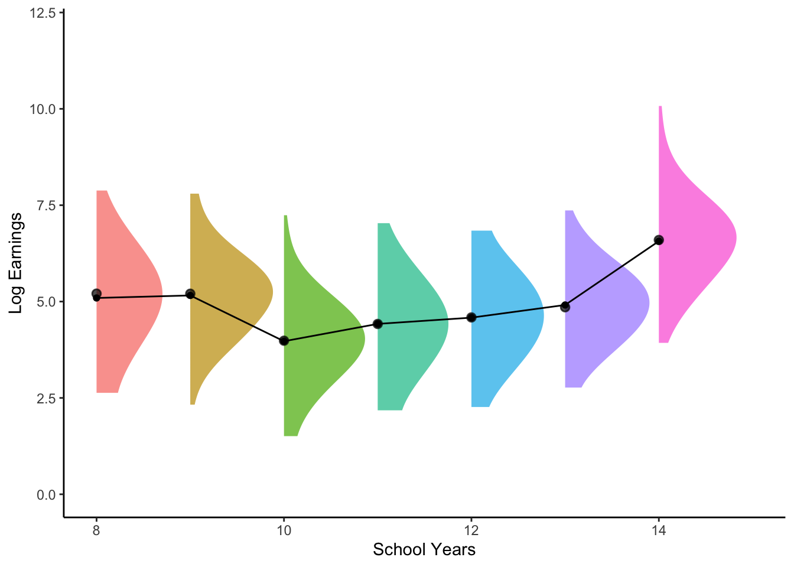
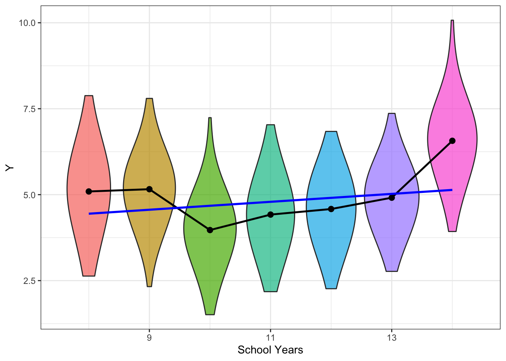

【計量經濟學】線性回歸筆記1：Population Regression
「線性回歸筆記」系列文章是我自己擔任計量經濟學原理暨實習助教時，整理出的筆記，主要參考Bruce Hansen的教科書 Econometrics。1計量經濟學（或社會科學領域的量化方法）介紹線性回歸的方式與從機器學習的角度出發有些不同，但在網路上並沒有見到繁體中文的相關資源，我想不如自己來寫。
這份筆記預設讀者已經有學過「微積分」和「機率與統計」。文中還有用到少量的線性代數，但沒有相關基礎的讀者可以直接跳過。
Let’s Go !
1 母體分配與I.I.D.樣本
在做量化研究時，我們將資料視為「樣本」，抽樣自於某個「母體」。在接下來的討論中，我們將採取一種簡化的觀點。2我們的樣本符合以下兩條件：
從母體開始
隨機樣本來源的共同的機率分布就是母體分布。母體分布通常是未知的；統計學的核心任務，是利用樣本去推論母體的一些性質。
研究者可能會對母體分配作出一些假設，例如假設某變數呈\(\mathcal{N}(\mu, \sigma^2)\)（期望值為\(\mu\)、變異數\(\sigma^2\)為的常態分布）。此時研究者的目標是從樣本猜測母體參數(\(\mu\), \(\sigma^2\) )。母體分配也被稱為統計模型(statistical model)，或是資料生成分配(data generating distribution)。
但在學習線性回歸時，先從母體出發反而更容易釐清目標。因此接下來我會先假設我們已經知道母體分配，來介紹本文的核心概念：母體回歸 (Population Regression)。3
2 期望值：用一個數字摘要一個機率分配
假設我們想研究臺灣人的薪資（用隨機變數\(Y\)表示），並且已經知道薪資的母體機率分配\(F_Y(\cdot)\)。我們有沒有辦法用「一個數字」描述這個分配呢？學過統計的同學心裡一定立刻想到期望值。
直觀上，期望值就是將各種可能的結果，用機率當權重算出來的「加權平均」。
\[ \mathbb{E}(Y) = \int_{- \inf}^{\inf} yf_Y(y)dy \]
一個支持期望值可以作為最佳代表的理由：期望值是最佳常數預測式。
最佳預測問題
給定研究者需用一個數字預測一個隨機變數\(Y\)的實現值。假設\(c\)是我的預測，我們定義\(Y-c\)是誤差(error)。此處誤差也是個隨機變數。我們可以計算均方誤(Mean Squared Error, MSE)：誤差平方後的期望值。 \[ MSE(c) := \mathbb{E}[(Y-c)^2] \] MSE越小代表預測越準確。
以下定理說明期望值是在所有數字中，能讓均方誤達到最小的。
綜上所述，對研究薪資分配的研究者而言，期望值有兩個功用：
- 期望值可以用一個數字描述整個隨機變數的「平均狀態」；
- 期望值可以對這個隨機變數的結果作出「最好的預測」。
我們很快就會看到，線性回歸跟期望值扮演極為類似的角色。
3 條件期望值：用一條函數摘要X與Y的關係
經濟學研究通常不只是研究某個變數的分配，而是某個變數與其他變數的關係。其他的變數稱作解釋變數，通常以\(X\)表示。舉例來說，我們將性別也納入考慮，以\(X\)代表性別的隨機變數。
假設每一個樣本的薪資與性別\((Y_i,X_i)\)都是I.I.D抽樣自聯合機率分配\(f_{YX}(y,x)\)。定義男性的條件薪資分配為
\[ f_{Y \mid X}(y \mid X= \text{male}) \]
同時女性的條件薪資分配
\[ f_{Y \mid X}(y \mid X= \text{female}) \] 用條件機率分配計算的期望值就是「條件期望值」：
\[ \mathbb{E}[Y \mid X = x] = \int_{-\infty}^{\infty} y \cdot f_{Y \mid X}(y \mid X = x) \, dy, \]
\(X\)也可以是類別變數。舉例來說，\(X\)代表居住區域的隨機變數。我們用四個條件期望值：
\[\begin{align*} E[Y| Region = 北部], \\ E[Y| Region = 中部], \\ E[Y| Region = 南部], \\ E[Y| Region = 東部] \end{align*}\]
來描述不同區域的薪資。\(X\)也可以是取值在實數上的隨機變數。例如年齡、身高、受教育年數等等。
條件期望值函數 (Conditional Expectation Function)
我們將「由X對應到條件期望值」的這個函數稱為「條件期望值函數」。在這個例子中可以寫成： \[ m(x) = E[Y|X =x] \]
雙重期望值定理
期望值與條件期望值有何關係？讓我們介紹鼎鼎大名的雙重期望值定理。
根據雙重期望值定理，如果我們要計算整體的薪資期望值\(\mathbb{E}[Y]\)，可以拆解成以下兩步：
- 對所有性別計算條件期望值（e.g. \(\mathbb{E}[Y| Male], \mathbb{E}[Y|Female]\)）
- 使用性別的機率分佈(例如機率\(p\)為男性、\(1-p\)為女性)對條件期望值取期望值。4
\[ \mathbb{E}[Y] = p \mathbb{E}[Y| Male] + (1-p)\mathbb{E}[Y|Female] \]
條件期望值的隨機性
假設X的實現值已知（性別已知），m(X)就是一個數字，如男性的薪資期望值。反之如果X的實現值未知，$E[Y|X]$（將隨機變數X帶入m(X))，本身是一個隨機變數。這也是第二步取期望值的依據。
CEF是「最佳預測式」
先前我們介紹期望值是「最佳常數預測式」。一旦擁有解釋變數X，我們就可以更進一步，用\(X\)的函數來預測\(Y\)。於是我們將前面的最佳預測問題改寫成：「給定\(X\)，我們能做出最好的預測為何？」
根據以下定理，條件期望值函數(CEF)是所有函數中，均方誤最小的預測式。
給定我們有Ｘ的資訊，我們能做出的最佳預測就是CEF給出的預測了。顯然，條件期望值可說就是期望值的「加強版」。
4 母體回歸：簡潔有力的「最佳線性」預測式
我們回到分析薪資的例子。在勞動經濟學中，討論薪資差異或許是最重要的變數：教育程度。設\(X\)代表就學的年數，在樣本中從12到18年不等。研究者可以針對該年數的薪資條件機率分配計算出條件期望值。
條件期望值函數作為預測式性質良好，不過並沒有特定的形式。上面的例子裡，我們用了7個數字描述薪資對就學年數。如果X的取值更多，我們需要更多資訊來描述。研究者為了適度簡化，通常會作出函數形式上的限制。最常見的例子，就是限制預測式必須是線性的：5
\[ \begin{align*} \hat Y = \underset{\text{截距}}{\underbrace{\beta_0}} + \underset{\text{斜率}}{\underbrace{\beta_1}}X \end{align*} \]
延續就學年數的例子。這個預測式中只有兩個「參數」：
- \(\beta_0\)表示當就學年數為0，應該做出的薪資預測是多少
- \(\beta_1\)表示整體而言，就學差距一年，在薪資上差距多大
對照之前CEF的三項功能，線性的形式有幾個好處：
無截距模型
當然研究者也可以設定其他函數形式，例如只使用截距項(intercept)，這就回到最早的單變數期望值。或是研究者設定沒有截距項： \[ Y = \beta_1 X \] 這被稱作無截距模型，仍然是線性的。
如上所述，限制函數形式的目的只是為了簡化，因此並沒有說一般模型跟無截距模型孰是孰非。 不過，取消截距項將預測式限制在通過原點的直線，無疑大幅降低預測的能力。 除非有特殊理由，我們以下都討論含截距項的函數形式。
最佳線性預測問題
我們可以將極小化均方誤的問題重新改寫，這次問的是說，假設要求這個函數要是「線性的」，最好的預測式是什麼？ \[ \begin{align*} (\beta_0, \beta_1) = \arg \min \mathbb{E}\left[ (Y - \beta_0 - \beta_1X )^2 \right]. \end{align*} \]
根據以下定理，這個問題的答案就是我們的主角：線性回歸。
課本是用Best Linear Predictor來稱呼，並使用以下符號：
\[ \mathcal{P}(Y|X)= \beta_0 + \beta_1X \]
Linear Projection
有時後也會把\(\mathcal{P}(Y|X)\)稱作線性投影Linear Projection；將\(\beta\)稱作投影係數(Regression Coefficients)。7
5 回歸線是CEF的最佳近似
Linear Regression跟期望值的關係:
只要將其帶入即可得：
\[ \mathbb{E}[Y] = \beta_0 + \beta_1 \mathbb{E}[X] \] 可見回歸是期望值概念的延伸。
這條線性回歸線，跟之前提到的CEF有何關係呢？
- Linear CER Theorem: 如果CEF本身就是線性的，那線性回歸線跟CEF就是同一個函數。
- Rregression-CEF Theorem: 就算不是線性的，我們可以定義近似誤差，線性回歸線也是CEF的最佳近似。
第一項的證明非常直觀：已知CEF是最佳預測式（考慮所有預測式的集合），那如果CEF同時存在一個比較小的集合（線性預測式）中，CEF當然也是該集合內的最佳。
第二項的證明也不難：
Theorem 線性回歸是CEF的最佳近似
\[ \beta_0, \beta_1 = argmin \mathbb{E}[(m(X)- \beta_0 - \beta_1X)^2] \]
證明： 觀察前述問題的MSE分解
\[\begin{align*} \mathbb{E}\left[ Y^2 \right] + 2 \mathbb{E}\left[ (Y - m(X)) (m(X) - \beta_0 - \beta_1X)^2 \right] + \mathbb{E}\left[ (m(X) - \beta_0 - \beta_1X )^2 \right] \end{align*}\]
此處的目標函數正好是第三項。而第一項與參數無關，第二項恆為零。所以此問題的解與best Linear Predictor問題的解相同。
對社會科學的研究者來說，線性回歸讓我們預測維持在「簡單」的線性形式，方便進行比較、詮釋。從預測的角度，雖然線性模型未必能提供最好的預測，但因為跟CEF密切相關，也可以視為一種基礎的門檻（其他更酷炫的機器學習方法至少要表現得更好），因此使用十分廣泛。
線性CEF模型
讀者會發現，至此我們並沒有對CEF的函數形式作出任何假設。不過許多介紹線性回歸的書籍會直接將線性CEF是做一項假設：
線性CEF模型（線性CEF作為一項模型假設）
\[ \mathbb{E}[Y|X] = \beta_0 + \beta_1X \] 如果定義\(e := Y - \mathbb{E}[Y\mid X]\)，則\(\mathbb{E}[e|X]=0\)。因此模型也可以下列二式呈現：
\[\begin{align*} Y = \mathbb{E}[Y\mid X] + e = \beta_0 + \beta_1X + e \\ \mathbb{E}[e|X]=0 \end{align*}\]根據此假設，該式自然也是最佳線性預測式。而我們可以用很簡便的方法推得同樣的係數：
Let \(e := Y - \mathbb{E}[Y\mid X]\). Under the linear CEF assumption, we have
\[\begin{align*} Y = \mathbb{E}[Y\mid X] + e = X'\beta + e \end{align*}\]由於\(\mathbb{E}[e|X]=0\)，
\[\begin{align*} \mathbb{E}[XY] = \mathbb{E}[X(X'\beta + e)] = \mathbb{E}[XX']\beta + \mathbb{E}[Xe] = \mathbb{E}[XX']\beta. \end{align*}\]As a result, \(\beta = \mathbb{E}[XX']^{-1}\mathbb{E}[XY]\) as in the BLP.
我們在後續討論估計式性質的時候，為了推倒一些理論上的性質，也會採用線性CEF的假設。不過此處我們對CEF的函數形式保持開放：CEF未必要是線性的。如果不是，我們就將母體回歸是做CEF的近似即可。
6 多變量回歸：一網打盡
當然我們可能取得不只一個可以預測、比較的變數。例如說我們除了教育年數還有資歷、成績等變數。我們將變數重新編號成\(X_1, X_2, X_3\)，一個多變量的線性函數可以寫成
\[ \beta_0 + \beta_1X_1 + \beta_2X_2 + \beta_3X_3 \]
或者是用向量內積表示：
我們可以依樣畫葫蘆求解最佳線性預測式，結果是：
\[ \beta = E[X'X]^{-1}E[XY] \]
如果只有一個變數跟常數，可以推導出前面的公式。
如果只有兩個解釋變數，多變量的回歸得到的預測式可以想像成一個平面。超過兩項就沒辦法在三維空間中畫出來了。這也再次顯示回歸統整資料的強大能力：如過想看X跟Y的關係，還可以用散佈圖，XYZ還能用三維的圖，在更多變數就沒有辦法視覺化了。回歸係數提個一個很簡便的統整讓你快速掌握「當其他變數相同，某變數跟Y的關係」
7 兩種誤差項：CEF Error 與 Projection Error
上面我們介紹了CEF與Population Regression(a.k.a Best Linear Predictor a.k.a Linear Projection)。我們可以依此定義兩種「誤差」的概念：
\[\begin{align*} \textbf{(CEF error)}\quad e_{\text{cef}} &:= Y - \mathbb{E}[Y\mid X],\\ \textbf{(Projection error)}\quad e_{\text{proj}} &:= Y - \mathcal{P}(Y\mid X). \end{align*}\]
兩者的區別可以從以下圖中看出：對於任意一組\((Y, X)\)，CEF error就是該點到CEF黑線的直線距離，而Projection Error就是該點到Regression Line藍線的距離。

很容易看出，對於任意X下的條件分配，必定是以m(X)為中心，所以CEF Error的條件期望值應當是0，但Regression Line未必通過每個條件分布的中心，條件期望值一般而言不為零。
Projection error 的性質
性質1
線性投影可寫成 \[\begin{align*} \mathcal{P}(Y\mid X)=X'\beta, \qquad \beta := \arg\min_{b}\ \mathbb{E}[(Y-X'b)^2], \end{align*}\] 因此 \(e_{\text{proj}}=Y-X'\beta\)。由一階條件（或稱 normal equations）可得 \[\begin{align*} 0 = \frac{\partial}{\partial b}\mathbb{E}[(Y-X'b)^2]\Big|_{b=\beta} \ \Longrightarrow\ \mathbb{E}\!\left[X(Y-X'\beta)\right] = \mathbb{E}[Xe_{\text{proj}}] = 0. \end{align*}\]\end{align*} 這常被稱為「正交條件」：投影誤差與每一個解釋變數（線性）不相關。
性質2
若 \(X\) 包含常數項 \(1\)，把上式中的 \(X\) 的其中一個分量取為 \(1\)，立刻得到 \[\begin{align*} \mathbb{E}[e_{\text{proj}}]=0. \end{align*}\] 進一步，若 \(X\) 包含常數項，則對每一個分量 \(X_j\)， \[\begin{align*} \Cov(X_j,e_{\text{proj}}) &= \mathbb{E}[X_je_{\text{proj}}]-\mathbb{E}[X_j]\mathbb{E}[e_{\text{proj}}] = 0- \mathbb{E}[X_j]\cdot 0 = 0. \end{align*}\] （注意：若 \(X\) 常數項，仍有 \(\mathbb{E}[Xe_{\text{proj}}]=0\)，但不一定能推出 \(\mathbb{E}[e_{\text{proj}}]=0\)。）
| CEF error | Projection error | |
|---|---|---|
| 定義 | \(e := Y - \mathbb{E}[Y\mid X]\) | $ := Y - (YX)$ |
| 性質 | \(E[e|X]=0\) | |
| \(\mathbb{E}[h(e)X]=0\) | \(\mathbb{E}[X\epsilon]=0\) | |
| \(\mathbb{E}[e_{\text{cef}}]=0\)（一般都成立） | 若\(X\)含常數項，則 \(\mathbb{E}[\epsilon]=0\) |
8 什麼時候不適合使用線性回歸？
線性函數過於侷限
線性回歸對因果性保持沈默
到目前為止，我們都還沒有談到因果性。事實上，線性迴歸本身並不是一個因果模型，而是一個統計模型。
為什麼統計模型無法表示因果？我們舉一個很基本的要求：對於因果關係，我們應該要區分是 \(X\) 造成了 \(Y\)，還是 \(Y\) 影響了 \(X\)，也就是因果具有方向性。CEF與Linear Regression並不能告訴我們因果的方向：沒有人阻止我們反過來用\(Y\)預測\(X\)。
老話一句，相關不等於因果。\(\beta\)反應的只是\(X, Y\)之間的相關性。在沒有設定因果模型(Causal Model)之前，「我們應該對不能說的事物保持沈默」。
那究竟什麼模型能夠稱作因果模型呢？未來我們會介紹「潛在結果架構」（Potential Outcome Framework），它提供一套進行因果推論的框架。屆時我們可以用potential outcome的語言重新詮釋線性關係。
CEF 未必是研究者的目標
不論CEF本身是線性或是我們使用Linear Regression近似CEF，CEF都是回歸分析的最終目標。因此， 研究者應該詢問自己，我所需要的（或是在理論上重要的）真的是CEF嗎？
一個著名的例子是所謂長短回歸Long-Short Regression。假設我們關心以下長回歸裡的\(\beta_1\)：
\[ Y = \beta_0 +\beta_1 X + \beta_2 Ability + \epsilon \] 此處我們假設線性CEF，\(\epsilon\)是CEF error。
但我們無法觀察到Ability，所以將其納入誤差項： \[\begin{align*} Y & = \beta_0 +\beta_1 X + (\beta_2 Ability + \epsilon) \\ & = \beta_0 +\beta_1 X + + \nu \end{align*}\]
一般而言，因為\(\mathbb{E}[Ability|X]\neq 0\)，所以\(\beta_0 +\beta_1 X\)並不是\(\mathbb{E}[Y|X]\)， \(\mathbb{E}[Y|X]\)另有其人：
\[\begin{align*} \mathbb{E}[Y|X] = b_0 + b_1 X + u \end{align*}\]
\(u\)是CEF Error，但\(\nu\)不是。一般而言\(b_1 \neq \beta_1\)。如果我們直接求X對Y的CEF，我們雖然可以得到「正確」的回歸係數\(b_1\)，但並不是研究者的目標\(\beta_1\)。關於Long-Short Regression與所謂「遺漏變數問題」我們會在未來專門寫一篇做講解。
總之，如果CEF並不是你的目標，用再多的樣本進行回歸分析也是緣木求魚。
下集預告
在這篇筆記中，我們完全假設母體分配已知。然而真實的應用中我們需要透過樣本去估計CEF或是Population Regression。最常見的估計式就是Ordinary Least Squares。下集我們會帶大家推導OLS estimator。
Footnotes
如果有讀者想問，為什麼大二必修計量經濟學原理暨實習會用一本經典的研究所教科書呢？Well, welcome to NTU… (準確來說應該要去問某位老師）↩︎
有些人會對於使用母體資料，例如已經包含全台灣人口的稅務資料，是否還需要考量隨機性感到困惑。從本文的立場，不論台灣有多少人，每個人的薪資都是抽取自未知的母體分配，因此仍然是隨機的，仍然可以進行假設檢定。反之，如果你並不假設有未知的母體分配，則行政資料確實窮盡了所有可能的取值，也就沒有任何隨機性可言。↩︎
本文中「母體回歸」與「線性回歸」有時會交互使用，然而不同作者使用「線性回歸」一詞中指涉的事物不盡相同。population regression一詞在Hansen中沒有出現，但我認為這個用詞有助於釐清母體與樣本的區別，因此還是採用。不過「母體回歸」無法避免的人想到駭客任務…↩︎
要小心的技術修細節是有可能Y期望值不存在，以及性別未必只有兩種。↩︎
此處線性指的是對於係數來說是線性的，因此\(\beta_0+ \beta_1X + \beta_2X^2\)也可以視為線性。↩︎
就我自己（淺薄）的經驗，「比較」是社科類量化研究裡回歸最主要的用途。就算是進到因果推論的領域，回歸還是做比較最方便的工具（如果正確的使用的話）。這個想法是來自於某天在X上看到一位計量教授的說法 Regression is a tool for making comparisons。↩︎
這是因為上述的最小化MSE問題在數學上可以被視為「投影問題」。此處的投影是指一個隨機變數到另一個隨機變數上的投影，詳細說明的話需要較深入的數學工具。後面講OLS Estimator時會介紹一個向量投影到一個空間，則是有簡單線性代數的知識就可理解。↩︎